O que é o Gestor de Projeto
O Gestor de Projeto é um app para acompanhar um projeto do cronograma até a entrega. [1] Você cadastra as tarefas com datas, responsáveis e dependências, registra o andamento nas reuniões de follow-up, e o app calcula o desvio do plano, o fluxo de entregas, o desempenho da equipe e os riscos. Tudo fica em um único arquivo HTML, que abre no navegador, sem instalação, sem conta e sem servidor.
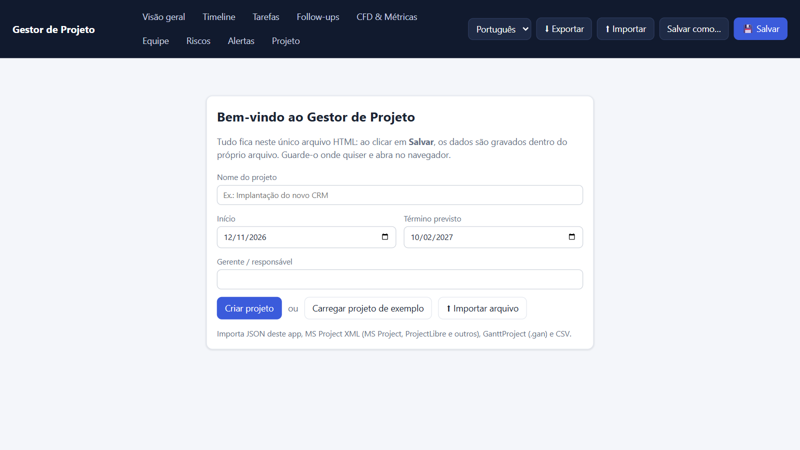
O app responde às perguntas que todo gerente de projeto ouve: estamos no prazo? O que está travando? Quem precisa de ajuda? Quando vamos terminar, e com que chance? Ele não substitui a conversa com a equipe. Ele prepara a conversa, porque mostra onde olhar.
Como o app trata os seus dados
- Os dados ficam no próprio arquivo. Ao clicar em Salvar, o app grava o projeto dentro do HTML. Guarde o arquivo onde quiser.
- Nada é enviado para a rede. O app não usa servidor nem biblioteca externa.
- Há cópia de segurança. Enquanto você não salva, o navegador guarda as alterações e oferece restaurá-las se a janela fechar.
- Quatro idiomas. A interface está em português, inglês, italiano e espanhol: troque no seletor do topo. Um link que termina em
#en,#itou#esjá abre no idioma, e o app lembra a última escolha.
Uma breve história
Cada tela do app vem de uma ideia com mais de meio século. Conhecer a origem ajuda a usar cada ferramenta para o que ela foi feita.
O cronograma em barras (1896–1915)
O engenheiro polonês Karol Adamiecki criou em 1896 um diagrama de barras para coordenar a produção, que chamou de harmonograma. [2] [3] Ele publicou em polonês e russo, e o trabalho ficou pouco conhecido no Ocidente. Entre 1910 e 1915, o americano Henry Gantt desenvolveu e divulgou em inglês o gráfico que leva o seu nome. É o que você vê na aba Timeline. As fontes divergem sobre quando Adamiecki apresentou o método: há registros de 1903, 1909 e 1931. [3]
Caminho crítico e PERT (1957–1959)
No fim dos anos 1950 surgiram, de forma independente, dois métodos de rede. James Kelley, da Remington Rand, e Morgan Walker, da DuPont, criaram o método do caminho crítico (CPM) e o publicaram em 1959. [4] [5] A Marinha dos Estados Unidos desenvolveu o PERT para o programa de mísseis Polaris. As fontes datam o início do PERT entre 1957 e 1958. [4] A ideia central dos dois métodos é a mesma do app: algumas tarefas não têm folga, e qualquer atraso nelas atrasa o projeto inteiro.
Valor agregado e o SPI (1967)
Em 1967, o Departamento de Defesa dos Estados Unidos passou a exigir dos fornecedores critérios de controle de custo e prazo (C/SCSC), a origem da gestão do valor agregado (EVM). [6] Os critérios viraram a norma ANSI/EIA-748 no fim dos anos 1990. Dela vem o índice de desempenho de prazo, o SPI, que o app mostra na Visão geral.
Kanban e fluxo (anos 1950 a 2010)
Na Toyota, Taiichi Ohno inverteu a lógica da fábrica: o processo seguinte busca as peças no anterior, sinalizado por um cartão, o kanban. [7] As fontes divergem sobre a data: algumas falam dos anos 1940, outras dos anos 1950; o método chegou a todas as fábricas da Toyota em 1963. Em 2010, David J. Anderson publicou o método Kanban para trabalho de conhecimento, com limite de trabalho em andamento (WIP) e diagrama de fluxo cumulativo (CFD). [8] É a base da aba CFD & Métricas.
Filas, simulação e risco (1949–2015)
Em 1961, John Little publicou a prova de que, em um sistema estável, o número médio de itens é a taxa de chegada vezes o tempo médio no sistema. [9] O método de Monte Carlo nasceu em Los Alamos nos anos 1940, com Stanislaw Ulam, John von Neumann e Nicholas Metropolis, e foi publicado com esse nome em 1949. [10] [11] Quem deu o nome é discutido: a história mais citada atribui a Metropolis, inspirado em um tio de Ulam que jogava em Monte Carlo. Daniel Vacanti juntou as duas ideias para prever entregas a partir da vazão histórica. [12] Já a matriz de probabilidade × impacto é usada há décadas, e em 2008 Tony Cox mostrou os seus limites matemáticos. [13]
| Ano | Ideia | Onde aparece no app |
|---|---|---|
| 1896 / 1910–1915 | Harmonograma de Adamiecki e gráfico de Gantt | Timeline |
| 1949 | Método de Monte Carlo publicado | Riscos: previsão de término |
| 1957–1959 | CPM e PERT | Dependências, caminho crítico, folga |
| 1961 | Prova da Lei de Little | CFD & Métricas: Lei de Little |
| 1963 | Kanban em todas as fábricas da Toyota | Limite de WIP, CFD |
| 1967 | Critérios C/SCSC, origem do valor agregado | SPI, curva S |
| 2008 | Crítica de Cox às matrizes de risco | Riscos: matriz e suas limitações |
| 2010 | Método Kanban para trabalho de conhecimento | CFD, vazão, tempo de ciclo |
A teoria por trás das métricas
Cada número do app tem uma fórmula simples. Saber a fórmula evita a armadilha mais comum: tratar um indicador como verdade, quando ele é só uma forma de olhar os dados que você registrou.
Progresso ponderado, planejado e real
Cada tarefa pesa a sua duração planejada em dias; um marco pesa 1. O progresso real é a média dos percentuais concluídos, ponderada por esse peso. O progresso planejado para hoje supõe que cada tarefa avança em linha reta do início ao fim. A diferença entre os dois, em pontos percentuais (p.p.), é o desvio.
progresso real = Σ (duração × % concluído) ÷ Σ duração
progresso planejado = Σ (duração × % que deveria estar pronto hoje) ÷ Σ duração
SPI = progresso real ÷ progresso planejadoNo valor agregado clássico, o SPI é o valor agregado dividido pelo valor planejado, em dinheiro. [6] O app não tem custos: usa a duração como valor de cada tarefa. É uma aproximação útil, mas não é o SPI de um contrato com EVM. SPI 1 significa no plano; abaixo de 1, atrasado. O app só calcula o SPI quando o planejado passa de 0,5%, para não dividir por quase zero.
Dependências, caminho crítico e folga
Uma dependência diz que uma tarefa precisa esperar outra. O app tem três tipos, com defasagem em dias.
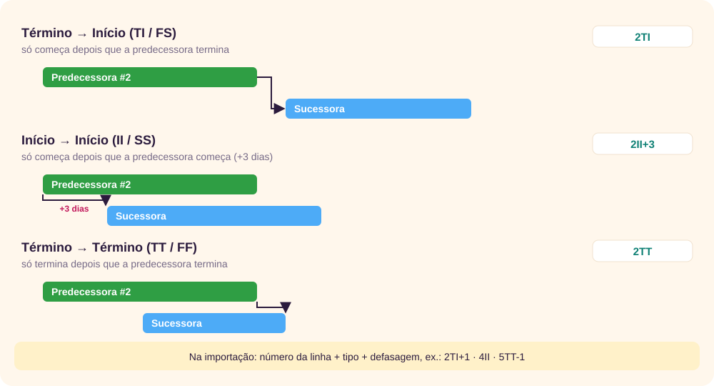
A folga de uma tarefa é quantos dias ela pode atrasar sem empurrar o fim do plano. O app calcula do fim para o começo, como no CPM: a última data permitida de cada tarefa sai das sucessoras. [5] Tarefas com folga zero ou negativa formam o caminho crítico. Atenção: a folga é medida contra a última data do plano, não contra o prazo do projeto. A diferença entre os dois aparece como reserva de prazo.
Fluxo: WIP, vazão, tempo de ciclo e Lei de Little
- WIP (trabalho em andamento): tarefas em andamento, em revisão ou bloqueadas.
- Vazão: tarefas concluídas por período.
- Tempo de ciclo: dias entre começar uma tarefa e concluí-la.
- Lead time: dias entre cadastrar a tarefa e concluí-la.
A Lei de Little liga os três: em um sistema estável, tempo médio de ciclo = WIP médio ÷ vazão média. [9] A consequência prática é a regra do Kanban: começar menos coisas ao mesmo tempo encurta o tempo de cada uma. [8] A lei vale para médias de um sistema estável. Em um projeto curto, que começa e termina, use o resultado como sinal, não como previsão.
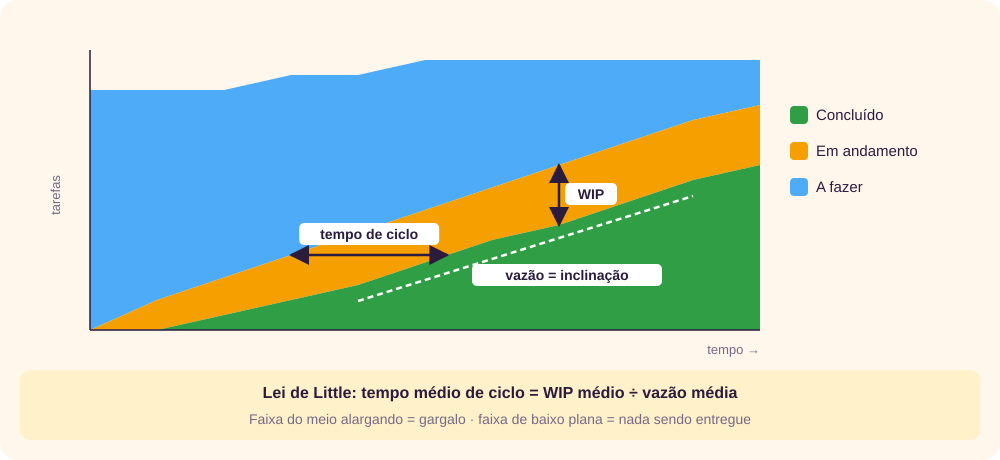
Previsão por Monte Carlo
Prever com uma única data esconde a incerteza. A simulação de Monte Carlo do app sorteia, muitas vezes, uma das semanas reais do projeto e desconta as entregas daquela semana das tarefas pendentes, até zerar. [10] [12] Cada rodada dá uma data de término; as 5.000 rodadas formam uma distribuição. Daí saem a chance de cumprir o prazo e as datas P50 (metade das rodadas termina até ela) e P85 (85% terminam até ela).
Matriz de risco
Cada tarefa aberta recebe uma probabilidade e um impacto de 1 a 3, a partir do que está registrado. O nível é o produto, de 1 a 9.

Cox mostrou que matrizes assim podem dar a mesma nota a riscos muito diferentes, e até inverter a ordem entre dois riscos. [13] Por isso a matriz do app serve para ordenar a conversa, e cada linha mostra os fatores que geraram a nota. Leia os fatores, não só a cor.
↑ Voltar ao topoPasso a passo
O trabalho com o app é um ciclo: planejar uma vez, depois acompanhar, analisar e decidir a cada reunião.
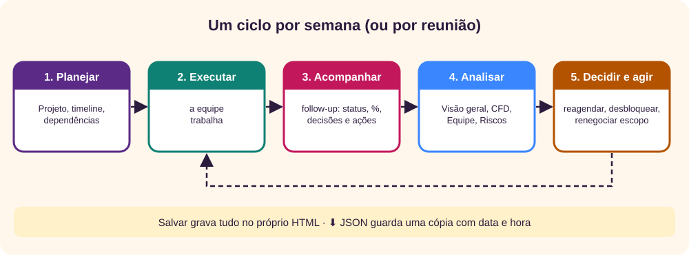
1. Conheça o app pelo exemplo
- Abra o Gestor de Projeto e clique em Carregar projeto de exemplo.
- Percorra as abas. O exemplo é a implantação de um CRM com 18 tarefas, 6 pessoas, dependências e três follow-ups.
- Quando terminar, vá em Projeto e use Apagar todos os dados, ou abra uma cópia nova do arquivo.
2. Crie o projeto
- Na tela inicial, preencha Nome do projeto, Início, Término previsto e o gerente.
- Clique em Criar projeto.
- Na aba Projeto, ajuste o Limite de WIP (quantas tarefas a equipe consegue tocar ao mesmo tempo) e os Dias sem atualização p/ alerta.
- Clique em 💾 Salvar. No Chrome e no Edge, escolha o próprio arquivo HTML para sobrescrever.
3. Monte a timeline
Você pode cadastrar tarefa por tarefa em + Tarefa ou colar da planilha. Para colar, vá em Tarefas → ⬆ Colar timeline. Para trazer um projeto do MS Project, do ProjectLibre ou do GanttProject, veja Salvar, exportar e importar. As colunas são:
Tarefa ; Fase ; Responsável ; Início ; Fim ; Status ; % ; Marco ; PredecessorasSó as cinco primeiras são obrigatórias. Teste com estas três linhas:
Kick-off;Descoberta;Ana;01/12/2026;01/12/2026;;;sim
Levantamento de requisitos;Descoberta;Ana;02/12/2026;12/12/2026;;;;1
Protótipos;Design;Diego;14/12/2026;23/12/2026;;;;2TI+1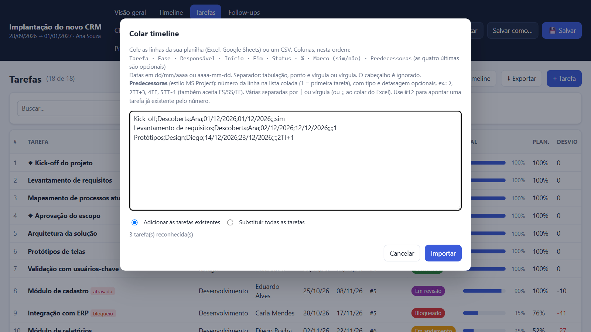
Na coluna de predecessoras, 1 é a primeira linha colada, 2TI+1 quer dizer “término da linha 2 mais 1 dia” e #12 aponta uma tarefa que já existe. Escolha Adicionar ou Substituir todas as tarefas e clique em Importar.
4. Ajuste dependências e datas
- Abra a Timeline. Marque Dependências e Caminho crítico.
- Se uma tarefa começa antes do que a predecessora permite, o app mostra o alerta Conflito de dependência.
- Clique em ⇥ Reagendar. O app propõe empurrar as tarefas ainda não iniciadas, mantendo a duração; ele nunca puxa datas para trás. Revise e clique em Aplicar reagendamento.
- Para ajustar uma tarefa só, abra-a e use ↦ Encaixar após predecessoras.
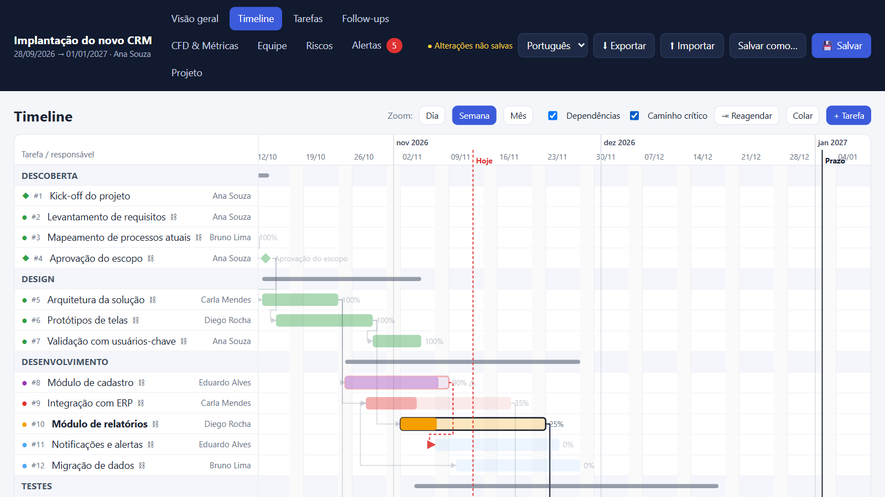
5. Conduza o follow-up
- Na aba Follow-ups, clique em + Nova. Confira título, data e participantes.
- Comece pela Pauta sugerida: o app lista bloqueios, atrasos, entregas e inícios próximos e ações pendentes.
- Em Atualização das tarefas, mude o status, o % e escreva a observação de cada tarefa discutida. A atualização fica no histórico na data da reunião, com a hora do registro. A lista mostra as tarefas relevantes para a data; marque Mostrar todas para ver as outras.
- Registre Anotações, Decisões (uma por linha) e Ações com responsável e prazo.
- Clique em 📝 Gerar ata para copiar ou baixar o texto, ou em 📄 Gerar PDF para o relatório completo.
- Clique em 💾 Salvar e, se quiser um histórico de versões, em ⬇ Exportar → JSON.
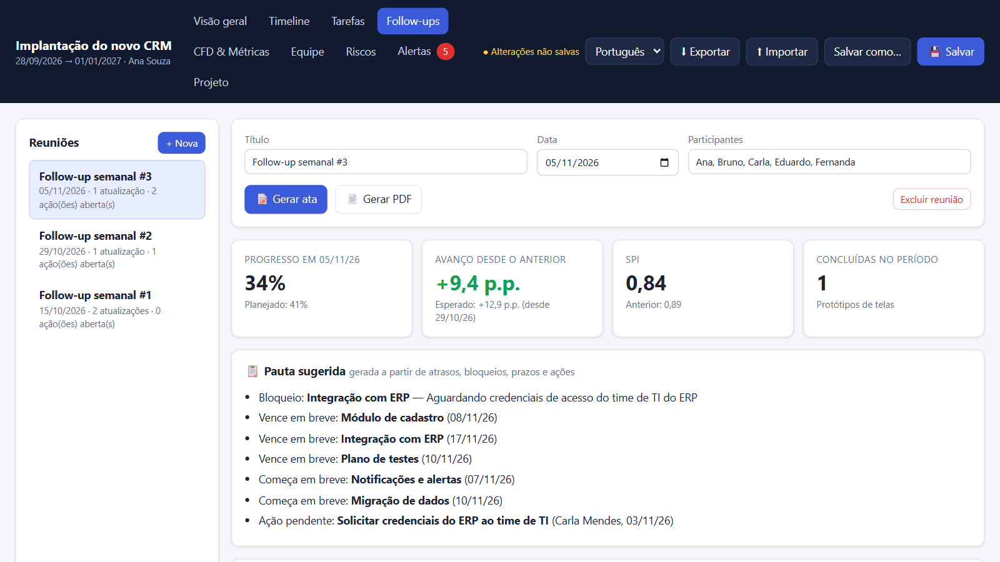
Em resumo
- Planeje uma vez: projeto, timeline, dependências, reagendamento.
- A cada reunião: + Nova, pauta, atualizações, decisões, ações, ata ou PDF.
- Salve no HTML e exporte o JSON para guardar versões.
As abas do app
| Aba | Para que serve |
|---|---|
| Visão geral | Saúde do projeto, progresso, SPI, previsão de término, insights automáticos, alertas principais e entregas dos próximos 14 dias. |
| Timeline | Gráfico de Gantt com zoom por dia, semana ou mês, dependências, caminho crítico, reagendamento e importação. |
| Tarefas | Lista com busca e filtros por status, fase, responsável e atraso. |
| Follow-ups | Reuniões, atualização das tarefas, pauta sugerida, decisões, ações, ata e PDF. |
| CFD & Métricas | Diagrama de fluxo cumulativo, WIP, vazão, tempo de ciclo, lead time, Lei de Little, curva S e idade do trabalho em andamento. |
| Equipe | Entregas no prazo, atraso médio, precisão das estimativas, retrabalho, bloqueios, ações e indicadores por pessoa. |
| Riscos | Chance de cumprir o prazo, reserva, exposição, matriz probabilidade × impacto, Monte Carlo, tendência do SPI e registro de riscos. |
| Alertas | Todos os alertas, de severidade alta, média e baixa. |
| Projeto | Dados do projeto, limite de WIP, alerta de inatividade, exportação e importação. |
No topo ficam também o seletor de idioma, ⬇ Exportar, ⬆ Importar, Salvar como… e 💾 Salvar.
Os status de uma tarefa são Backlog, A fazer, Em andamento, Bloqueado, Em revisão e Concluído. Em andamento, Bloqueado e Em revisão contam como WIP.
↑ Voltar ao topoComo realizar a análise
Analisar é responder a seis perguntas, nesta ordem. Cada uma tem uma aba e um número principal. Os exemplos abaixo são do projeto de exemplo aberto em 12/11/2026; como o exemplo é montado a partir da data de hoje, as datas mudam em outro dia.
1. Estamos no prazo?
Na Visão geral, compare progresso real e planejado e olhe o SPI. No exemplo: 42% real contra 56% planejado, SPI 0,75. O app marca a saúde como Crítico quando o SPI fica abaixo de 0,85, a previsão passa do prazo em mais de 7 dias ou há 3 ou mais alertas altos; como Atenção com SPI abaixo de 0,95 ou previsão após o prazo.
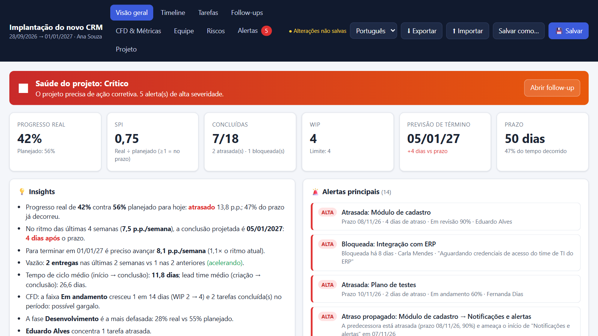
2. Onde o fluxo trava?
No CFD & Métricas, procure faixas que se alargam e a faixa de concluídas plana. Compare Chegada × saída: no exemplo, 1,5 tarefa iniciada contra 0,8 concluída por semana, ou seja, o WIP está crescendo. A tabela Idade do trabalho em andamento destaca tarefas abertas há mais de 1,5 vez o ciclo médio.
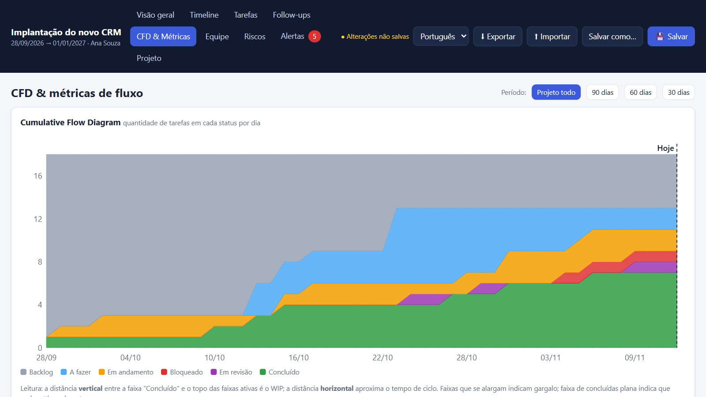
3. O plano ainda é viável?
Na Timeline, ligue o caminho crítico e veja se alguma tarefa crítica está atrasada. Na aba Riscos, o cartão Reserva de prazo compara o fim do plano com o prazo. No exemplo, a reserva é zero e, pelo ritmo atual, faltam 4 dias.
4. Quem precisa de ajuda?
Na aba Equipe, olhe a tabela por pessoa: atrasadas, SPI, dias bloqueados, ações vencidas e a última atualização. Uma pessoa com SPI baixo e muitos dias bloqueados provavelmente precisa que alguém remova um impedimento, não de cobrança.
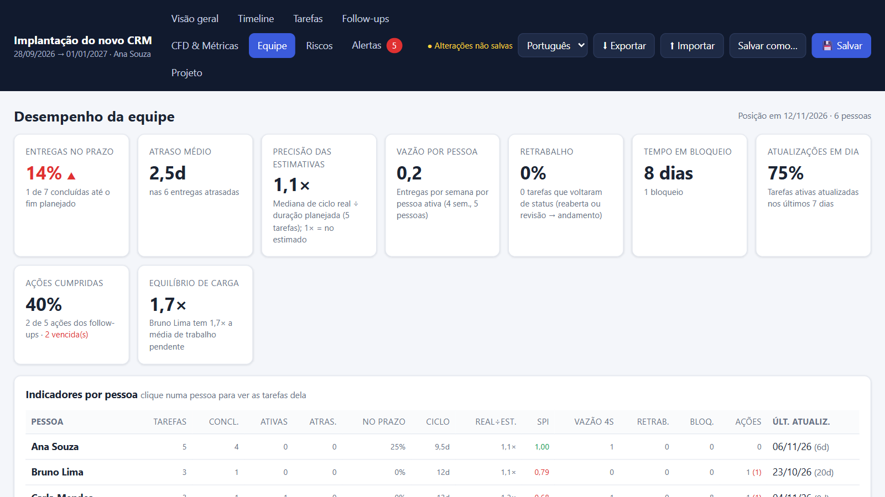
5. O que pode dar errado?
Na aba Riscos, comece pela matriz: clique na célula vermelha para filtrar os críticos e leia as etiquetas de cada um. No exemplo há 8 riscos altos ou críticos entre 11 tarefas abertas, e 80% do trabalho pendente está neles. O cartão Dependências em risco mostra atrasos que vão se propagar.
6. Quando termina, e com que chance?
Compare duas previsões. A da Visão geral projeta o ritmo de avanço em p.p. por semana: 05/01/2027 no exemplo. A da aba Riscos simula a vazão de tarefas: no exemplo, 11% de chance de terminar no prazo, metade das simulações até 28/01/2027 e 85% até 25/02/2027. As duas divergem porque medem coisas diferentes. Quando a distância é grande, comunique a faixa de datas, não uma data só.
Da análise à decisão
| Sinal | Ação típica |
|---|---|
| WIP acima do limite, chegada maior que saída | Parar de começar e terminar o que está aberto. |
| Tarefa crítica bloqueada | Escalar o bloqueio na hora, com responsável e data. |
| Chance de prazo abaixo de 50% | Renegociar escopo ou prazo, ou adicionar capacidade no caminho crítico. |
| Precisão das estimativas acima de 1,3× | Revisar as durações das tarefas restantes com a equipe. |
| Concentração de trabalho acima de 40% numa pessoa | Redistribuir ou formar alguém para reduzir a dependência. |
| Ações vencidas | Trazer para o início da próxima pauta. |
Boas práticas e erros comuns
Boas práticas
- Quebre o trabalho em tarefas de até duas semanas. Tarefas longas escondem o atraso até o fim e distorcem o progresso ponderado.
- Atualize em toda reunião. As métricas de fluxo dependem das datas de mudança de status. Uma tarefa que muda de status só no fim não tem ciclo confiável.
- Escreva a causa do bloqueio. A observação aparece no alerta e na pauta, e evita a pergunta “por que está parado?”.
- Use marcos para entregas e aprovações. Marcos sobem o impacto no risco e aparecem em destaque.
- Cadastre as dependências reais. Sem elas não há caminho crítico nem atraso propagado.
- Defina o limite de WIP com a equipe. Um bom começo é o número de pessoas.
- Exporte o JSON após cada follow-up. O arquivo leva data e hora e vira um histórico de versões.
- Mostre as métricas da equipe para a equipe. Elas existem para achar gargalos, não para ranquear pessoas.
Erros comuns
“O SPI está em 1, então está tudo bem.”
O SPI é uma média. Ele pode estar em 1 com uma tarefa crítica bloqueada. Confira sempre o caminho crítico e os alertas.
“Vou marcar 90% para mostrar avanço.”
Percentuais otimistas inflam o progresso e escondem o atraso até a última semana. Prefira status honestos e tarefas menores.
“A matriz deu verde, então não há risco.”
A matriz só vê o que foi registrado. Riscos externos, como a saída de um fornecedor, precisam ser discutidos na reunião.
“A simulação garante a data P85.”
Ela supõe que o futuro repete as últimas semanas. Se a equipe ou o escopo mudarem, a previsão perde a validade.
“Reagendar resolve o atraso.”
Reagendar só torna o plano coerente com as dependências. O atraso continua; agora ele está visível.
“Quem tem SPI baixo é o problema.”
SPI baixo costuma vir de bloqueios, dependências e estimativas ruins. Pergunte o que está impedindo antes de concluir.
Prompts para acelerar o trabalho
Uma IA ajuda a transformar escopo em timeline, revisar o plano, preparar a pauta e escrever relatórios. Ela também erra com segurança: inventa durações e explica números que não leu. Trate a saída como rascunho de um colega apressado e confira os números no app. Para escrever prompts melhores, veja o tutorial de prompts. [14]
Antes de colar: o JSON e as atas podem conter nomes, clientes e valores sigilosos. Troque por dados fictícios e siga a política da sua organização para uso de IA. O app não envia nada para a rede, mas o serviço de IA recebe o que você colar.
Troque os trechos entre colchetes e cole na ferramenta de IA que você usa.
1. Transformar o escopo em timeline
Gera as linhas no formato da importação, prontas para colar.
Você é um gerente de projetos experiente.
Projeto: [descreva em poucas frases o objetivo e as entregas].
Equipe: [nomes e papéis]. Início: [dd/mm/aaaa]. Prazo: [dd/mm/aaaa].
Monte a timeline em fases, com tarefas de no máximo 10 dias úteis e marcos para aprovações e entregas.
Antes de responder, me faça até 5 perguntas sobre o que faltar. Não invente durações: quando não souber, marque [estimar] na observação ao final.
Entregue só linhas de texto no formato, separadas por ponto e vírgula, sem cabeçalho:
Tarefa;Fase;Responsável;Início (dd/mm/aaaa);Fim (dd/mm/aaaa);Status;%;Marco (sim ou vazio);Predecessoras
Em Predecessoras use o número da linha (1 = primeira linha), com tipo e defasagem opcionais: 2, 2TI+3, 4II, 5TT-1. Deixe Status e % vazios.
Depois das linhas, liste as premissas que você assumiu.2. Revisar o plano antes de começar
Revise esta timeline como um gerente de projetos cético.
[cole as linhas da timeline ou o CSV exportado pelo app]
Aponte, em tabela (problema, tarefas envolvidas, por que importa, sugestão):
- dependências que parecem faltar ou estar invertidas;
- tarefas longas demais para acompanhar semanalmente;
- durações que parecem otimistas, dizendo em que você se baseia;
- pessoas com tarefas sobrepostas no mesmo período;
- entregas sem marco de aprovação;
- riscos que não aparecem no plano.
Não reescreva o plano inteiro. Se não tiver base para um ponto, diga que é uma hipótese.3. Preparar a pauta do follow-up
Abaixo está o JSON exportado do Gestor de Projeto (dados anonimizados).
[cole o JSON]
Hoje é [dd/mm/aaaa]. Prepare a pauta da reunião de follow-up de [30] minutos:
1. Itens em ordem de prioridade: bloqueios, tarefas atrasadas do caminho crítico, ações vencidas, entregas dos próximos 14 dias.
2. Para cada item: a pergunta a fazer, quem responde e o tempo sugerido.
3. Ao final, as decisões que a reunião precisa tomar.
Use apenas dados do JSON. Cite o número da tarefa (#n). Não calcule métricas que o JSON não traz; se precisar delas, diga em que aba do app olhar.4. Escrever o relatório de status
Escreva um relatório de status para [diretoria / cliente / equipe], em até 250 palavras.
Números do app nesta data (copie das abas Visão geral e Riscos):
- Progresso real [x]% vs planejado [y]%; SPI [z]
- Previsão de término [data]; chance de cumprir o prazo [p]%; P85 [data]
- Bloqueios: [lista]; riscos críticos: [lista]
- Decisões da última reunião: [lista]
Estrutura: situação em uma frase (verde, amarelo ou vermelho e por quê), o que avançou, o que preocupa, o que precisamos de quem lê, próximos passos.
Use só os números informados. Não arredonde para melhor e não suavize o vermelho.5. Planejar a resposta aos riscos
Este é o registro de riscos do meu projeto, copiado da aba Riscos do app (nível, tarefa, responsável, fim, status, fatores):
[cole a tabela]
Contexto: [prazo, restrições, o que pode e o que não pode mudar].
Para os riscos de nível alto e crítico, proponha respostas classificadas como evitar, mitigar, transferir ou aceitar.
Para cada uma: ação concreta, responsável sugerido, prazo, custo ou esforço aproximado e o sinal no app que mostra se funcionou.
Diga quais riscos dependem de decisão do patrocinador. Não proponha mais de 3 ações por risco.6. Transformar anotações em decisões e ações
Estas são minhas anotações soltas da reunião de follow-up:
[cole as anotações]
Separe em:
1. Decisões: uma por linha, no infinitivo, sem justificativa.
2. Ações: uma por linha, no formato "O que será feito | Responsável | dd/mm/aaaa".
3. Atualizações de tarefas: "#n | novo status | % | observação curta".
4. Dúvidas: o que ficou ambíguo e precisa ser confirmado.
Não invente responsáveis nem prazos: deixe [definir] quando não estiverem nas anotações.7. Fazer uma retrospectiva sem culpados
Vou facilitar uma retrospectiva com a equipe. Métricas da aba Equipe do app:
[cole os cartões e a tabela por pessoa, com nomes trocados por Pessoa A, B, C]
Proponha um roteiro de 45 minutos:
1. Três observações sobre o sistema de trabalho (fluxo, estimativas, bloqueios), sem atribuir culpa a pessoas.
2. Para cada observação, uma pergunta aberta para a equipe.
3. Dois experimentos pequenos para as próximas duas semanas, com o indicador do app que vamos acompanhar.
Lembre que as métricas medem o que foi registrado, não o esforço das pessoas.Salvar, exportar e importar
| Botão | O que faz |
|---|---|
| 💾 Salvar (Ctrl+S) | Grava o projeto dentro do HTML. No Chrome e no Edge, na primeira vez você escolhe o arquivo; depois o app grava direto nele. No Firefox e no Safari, baixa uma nova cópia do HTML, que substitui a antiga. |
| Salvar como… | Grava em outro arquivo (Chrome e Edge). |
| ⬇ Exportar | Abre a janela de formatos: JSON do app (cópia completa, com data e hora no nome, como nome-AAAA-MM-DD_HHhMM.json), MS Project XML, GanttProject e planilha CSV. |
| ⬆ Importar | Reconhece o arquivo pelo conteúdo: JSON do app, MS Project XML (.xml), GanttProject (.gan) ou CSV, que abre a janela de colar timeline. Antes de trocar o projeto, mostra um resumo e pede confirmação. |
| 📝 Gerar ata / 📄 Gerar PDF | Texto da reunião ou relatório completo com follow-up, CFD, equipe e riscos. No PDF, escolha “Salvar como PDF” na janela de impressão. |
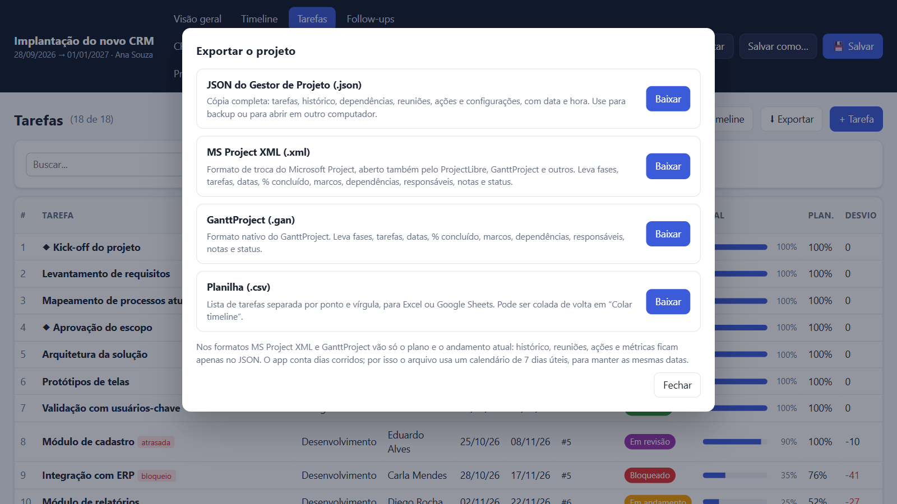
Trocar arquivos com MS Project, ProjectLibre e GanttProject
O Microsoft Project abre e salva um formato XML de troca, o MSPDI, descrito num esquema publicado pela Microsoft. [15] [16] Segundo um comparativo e o fórum do ProjectLibre, o ProjectLibre abre arquivos .mpp e salva no próprio formato ou em MS Project XML, mas não grava .mpp. [17] O GanttProject tem formato próprio, o .gan, e exporta MSPDI. [18] Por isso o app troca dados com esses programas por dois formatos: MS Project XML e .gan.
| Dado do app | No arquivo |
|---|---|
| Fases | Tarefas-resumo (MS Project, ProjectLibre) ou tarefas-mãe (GanttProject). |
| Tarefas, datas, % concluído e marcos | Vão e voltam iguais. |
| Dependências TI, II e TT com defasagem | Vão e voltam iguais. Na importação, dependências Início → Término e ligadas a fases são ignoradas, com aviso. |
| Responsável | Recurso atribuído à tarefa. |
| Notas da tarefa | Notas da tarefa. |
| Status | Campo Texto1 com o nome “Status” (MS Project) ou coluna personalizada (GanttProject). Num arquivo sem esse campo, o status sai do % concluído. |
| Histórico, reuniões, ações e configurações | Não vão: ficam só no JSON. |
Do MS Project ou ProjectLibre para o app
- No MS Project, use Arquivo → Salvar como e escolha o tipo Formato XML (*.xml). [15] No ProjectLibre, salve como MS Project XML.
- No app, clique em ⬆ Importar e escolha o arquivo .xml (ou o .gan do GanttProject).
- Confira o resumo: projeto, tarefas, fases, dependências, responsáveis e avisos.
- Escolha Substituir o projeto atual ou Adicionar tarefas ao projeto atual, e depois clique em 💾 Salvar.
Do app para o MS Project, ProjectLibre ou GanttProject
Clique em ⬇ Exportar e baixe MS Project XML ou GanttProject. No MS Project, para ver o arquivo na janela Abrir, escolha o tipo Formato XML ou Todos os arquivos. [15]
Arquivos .mpp (MS Project) e .pod (ProjectLibre) são binários e o navegador não os lê. Se você escolher um deles, o app explica como salvar em XML.
Como foi verificado. O XML exportado do projeto de exemplo foi validado contra o esquema oficial mspdi_pj12.xsd [16] e lido pela biblioteca independente MPXJ, [19] que encontrou as mesmas datas, dependências, defasagens e responsáveis. O .gan foi comparado com um arquivo de exemplo do próprio GanttProject [20] e lido pela MPXJ. Exportar e importar de volta deu o mesmo projeto nos dois formatos. Os arquivos não foram abertos no MS Project, no ProjectLibre nem no GanttProject: antes de migrar um projeto importante, teste com um pequeno.
Compartilhar
Para compartilhar, envie o HTML salvo: quem abrir vê o projeto. Se o arquivo for aberto direto de uma pasta do SharePoint ou do OneDrive no navegador, o app bloqueia o salvamento, porque a gravação não chegaria ao arquivo da biblioteca. Baixe uma cópia local, edite e faça o upload de volta.
↑ Voltar ao topoLimitações e solução de problemas
Limitações
- Dias corridos. Durações e folgas contam todos os dias do calendário, sem fins de semana nem feriados.
- Sem custo nem horas. O SPI usa a duração como valor; não há CPI nem capacidade em horas por pessoa.
- Um arquivo, uma pessoa por vez. Não há edição simultânea. Se duas pessoas salvarem cópias diferentes, uma sobrescreve a outra.
- Métricas dependem do registro. Sem atualizações frequentes, ciclo, vazão e Monte Carlo ficam pobres.
- Monte Carlo trata as tarefas como iguais. Precisa de pelo menos 2 semanas de histórico e de alguma entrega.
- Troca com outros apps só leva o plano. MS Project XML e GanttProject não levam histórico, reuniões nem ações; um responsável por tarefa; dependências Início → Término e ligadas a fases ficam de fora.
- Sem .mpp nem .pod. Esses formatos binários precisam ser salvos como XML no programa de origem.
Solução de problemas
| Sintoma | Causa e solução |
|---|---|
| Salvei, mas ao reabrir os dados sumiram. | No Firefox e no Safari, o Salvar baixa uma cópia nova. Abra a cópia baixada ou substitua o arquivo antigo por ela. |
| O botão diz “Salvar bloqueado”. | O arquivo foi aberto do SharePoint ou do OneDrive. Baixe uma cópia local. |
| A importação colada reconheceu menos linhas. | Confira as datas (dd/mm/aaaa ou aaaa-mm-dd) e se o fim não é antes do início. |
| Escolhi um arquivo .mpp e o app não abriu. | O .mpp é binário. No MS Project, salve como Formato XML (*.xml) e importe o .xml. |
| No MS Project, os fins de semana aparecem como dias úteis. | É o calendário de 7 dias que mantém as datas iguais às do app. Troque o calendário do projeto no MS Project, se quiser, sabendo que as datas vão mudar. |
| O resumo da importação mostra avisos. | Algumas ligações não existem no app, como Início → Término ou dependências de fases. As tarefas entram; só essas ligações ficam de fora. |
| “Este JSON não é um projeto do Gestor de Projeto.” | O arquivo não tem project e tasks. Use um JSON exportado pelo app. |
| A aba Riscos diz “Precisa de 2+ semanas de histórico”. | O projeto é novo demais para a simulação. Use a previsão da Visão geral por enquanto. |
| Não aparece caminho crítico. | Cadastre dependências. Sem elas, o app não calcula folga. |
Glossário
Os termos de projeto usados no app e neste tutorial, em ordem alfabética.
| Termo | Definição |
|---|---|
| Ação (encaminhamento) | Tarefa curta combinada numa reunião, com responsável e prazo. Não entra no cronograma; é acompanhada nos follow-ups seguintes até ser concluída. |
| Ata | Registro escrito da reunião: situação, atualizações, decisões e ações. No app: 📝 Gerar ata, no follow-up. |
| Backlog | Trabalho conhecido que ainda não foi priorizado para começar. No app, é o primeiro status de uma tarefa. |
| Bloqueio (impedimento) | Algo fora do controle de quem executa que impede a tarefa de avançar, como falta de acesso ou de aprovação. No app, status Bloqueado; vira alerta alto após 3 dias. |
| Caminho crítico | Sequência de tarefas sem folga: qualquer dia de atraso nelas atrasa o fim do plano. [5] No app, na Timeline, com Caminho crítico marcado. |
| CFD (diagrama de fluxo cumulativo) | Gráfico de áreas empilhadas com quantas tarefas estão em cada status a cada dia. Mostra WIP, tempo de ciclo e gargalos. [8] |
| Cronograma (gráfico de Gantt) | Plano das tarefas no tempo, com uma barra por tarefa entre o início e o fim. [2] No app: aba Timeline. |
| Curva S | Gráfico do progresso acumulado ao longo do tempo, planejado contra real. Costuma ter forma de S: começa devagar, acelera e desacelera no fim. |
| Defasagem (lag) | Espera, em dias, somada a uma dependência. Positiva atrasa a sucessora; negativa antecipa. Ex.: 2TI+3 = três dias depois do fim da tarefa 2. |
| Dependência | Regra que obriga uma tarefa a esperar outra. O app tem Término → Início (TI), Início → Início (II) e Término → Término (TT). [5] |
| Desvio (p.p.) | Diferença entre progresso real e planejado, em pontos percentuais. Negativo = atrasado. |
| Escopo | O conjunto de entregas e trabalho que o projeto se compromete a fazer. Mudar o escopo costuma mudar prazo ou esforço. |
| EVM (gestão do valor agregado) | Método que compara o trabalho feito com o planejado e com o custo, criado a partir dos critérios C/SCSC de 1967. [6] O app usa só a parte de prazo, sem custos. |
| Fase | Grupo de tarefas de uma mesma etapa ou entrega, como Descoberta ou Testes. Vira tarefa-resumo no MS Project e tarefa-mãe no GanttProject. |
| Folga | Quantos dias uma tarefa pode atrasar sem empurrar o fim do plano. Folga zero = caminho crítico. [5] |
| Follow-up | Reunião periódica para atualizar o andamento, decidir e registrar ações. No app: aba Follow-ups. |
| Lead time | Dias entre o cadastro de uma tarefa e a sua conclusão. Inclui o tempo de espera antes de começar. |
| Lei de Little | Num sistema estável, tempo médio de ciclo = WIP médio ÷ vazão média. [9] |
| Linha de base (baseline) | Cópia aprovada do plano, guardada para comparar com o que acontece. O app não guarda uma linha de base separada: compara com as datas planejadas atuais. |
| Marco (milestone) | Ponto do plano sem duração que marca uma entrega ou aprovação, como o go-live. Aparece como ◆. |
| Matriz de risco | Quadro de probabilidade × impacto para ordenar riscos. Útil para a conversa, mas com limites matemáticos conhecidos. [13] |
| Monte Carlo | Simulação que repete um sorteio milhares de vezes para estimar a distribuição de um resultado. [10] No app, sorteia semanas reais de vazão para prever o término. |
| MS Project XML (MSPDI) | Formato XML de troca do Microsoft Project, descrito num esquema publicado pela Microsoft. [16] O app importa e exporta nele. |
| P50 e P85 | Datas até as quais terminam 50% e 85% das simulações de Monte Carlo. Comunicar o P85 dá uma margem maior que a data mais provável. |
| Partes interessadas (stakeholders) | Pessoas e grupos afetados pelo projeto ou que podem influenciá-lo: patrocinador, usuários, equipe, fornecedores. |
| Patrocinador (sponsor) | Quem responde pelo projeto na organização, garante recursos e toma as decisões que estão acima do gerente, como mudar escopo ou prazo. |
| Pauta | Lista de assuntos de uma reunião, em ordem de prioridade. O app sugere a pauta a partir de atrasos, bloqueios, prazos e ações. |
| Predecessora e sucessora | Na dependência, a predecessora é a tarefa esperada e a sucessora é a que espera. |
| Progresso planejado e real | Média dos percentuais que deveriam estar prontos hoje (planejado) e dos que estão prontos (real), ponderada pela duração de cada tarefa. |
| Reserva de prazo | Dias entre o fim do plano e o prazo do projeto. Reserva zero ou negativa = qualquer atraso no caminho crítico estoura o prazo. |
| Retrabalho | Trabalho refeito: no app, tarefa reaberta depois de concluída ou que voltou da revisão para o andamento. |
| Risco | Evento incerto que, se acontecer, afeta o prazo, o custo ou a qualidade. No app, cada tarefa aberta recebe probabilidade e impacto de 1 a 3. |
| SPI (índice de desempenho de prazo) | Progresso real ÷ progresso planejado. 1 = no plano; abaixo de 1 = atrasado. No EVM é calculado com valores em dinheiro; [6] no app, com a duração das tarefas. |
| Tempo de ciclo | Dias entre começar uma tarefa e concluí-la. |
| Vazão (throughput) | Quantidade de tarefas concluídas por período, como por semana. |
| WIP e limite de WIP | Trabalho em andamento: tarefas em andamento, em revisão ou bloqueadas. O limite é o máximo combinado com a equipe; acima dele, o app alerta. [8] |
Revisão rápida
Tente responder antes de abrir cada pergunta.
1. O progresso real é 30% e o planejado é 40%. Qual é o SPI?
0,75. O projeto entregou 75% do que deveria ter entregue até hoje.
2. O que o app usa como “valor” no cálculo do SPI?
A duração planejada de cada tarefa, em dias. Marcos pesam 1. Não há custo no app.
3. Uma tarefa tem folga zero. O que isso significa?
Ela está no caminho crítico: qualquer dia de atraso empurra a última data do plano.
4. O WIP é 6 e a vazão é 2 tarefas por semana. Qual é o tempo médio de ciclo pela Lei de Little?
3 semanas, cerca de 21 dias: 6 ÷ 2.
5. No CFD, a faixa de concluídas ficou plana por duas semanas. O que investigar?
Nada foi entregue. Procure bloqueios, tarefas grandes demais e excesso de WIP.
6. A previsão da Visão geral e a do Monte Carlo divergem. Qual está certa?
Nenhuma é “a certa”: uma projeta o ritmo de avanço em %, a outra a vazão de tarefas. Comunique a faixa e investigue por que divergem.
7. A matriz deu nível 9 para uma tarefa. Por onde começar?
Pelas etiquetas da linha: elas dizem por que a probabilidade e o impacto subiram, e apontam a ação.
8. A IA escreveu que a chance de cumprir o prazo é 70%, mas o app mostra 11%. Em quem confiar?
No app, que calculou com os dados registrados. Confira de onde a IA tirou o número; provavelmente ela inventou.
9. Você precisa levar o plano para o MS Project. Qual formato usar, e o que fica para trás?
MS Project XML, em ⬇ Exportar. Vão fases, tarefas, datas, %, marcos, dependências, responsáveis, notas e status; histórico, reuniões e ações ficam só no JSON.
Referências
- Giovani Perotto Mesquita, “Gestor de Projeto”, aplicativo em um único arquivo HTML, giovanipm.github.io/gestor-projeto.html.
- Wikipedia (em inglês), “Gantt chart”, acesso em 12/11/2026, en.wikipedia.org/wiki/Gantt_chart.
- Rework, “Karol Adamiecki and the Harmonogram”, acesso em 12/11/2026, resources.rework.com. As fontes divergem sobre a data em que Adamiecki apresentou o método: 1903, 1909 ou 1931.
- Project Management Institute, “They wrote the book: the early literature of modern project management”, acesso em 12/11/2026, pmi.org. As fontes datam o início do PERT em 1957 ou em 1958.
- James E. Kelley Jr., Morgan R. Walker, “Critical-Path Planning and Scheduling”, Proceedings of the Eastern Joint Computer Conference, 1959.
- Wikipedia (em inglês), “Earned value management”, acesso em 12/11/2026, en.wikipedia.org/wiki/Earned_value_management.
- Rework, “The History of Kanban”, acesso em 12/11/2026, resources.rework.com. As fontes divergem entre os anos 1940 e 1950 para a origem do kanban na Toyota.
- David J. Anderson, Kanban: Successful Evolutionary Change for Your Technology Business, livro, Blue Hole Press, 2010, ISBN 978-0-9845214-0-1.
- John D. C. Little, “A Proof for the Queuing Formula: L = λW”, Operations Research, v. 9, n. 3, p. 383–387, 1961, doi.org/10.1287/opre.9.3.383.
- Nicholas Metropolis, Stanislaw Ulam, “The Monte Carlo Method”, Journal of the American Statistical Association, v. 44, p. 335–341, 1949.
- Los Alamos National Laboratory, “Hitting the jackpot: the birth of the Monte Carlo method”, acesso em 12/11/2026, discover.lanl.gov. As fontes divergem sobre quem deu o nome ao método, Metropolis ou Ulam.
- Daniel S. Vacanti, Actionable Agile Metrics for Predictability, livro, Leanpub, leanpub.com/actionableagilemetrics. A edição consultada tem copyright de 2015–2016; a biografia do autor no Leanpub diz que o livro foi publicado em 2014.
- Louis Anthony (Tony) Cox Jr., “What’s Wrong with Risk Matrices?”, Risk Analysis, v. 28, n. 2, p. 497–512, 2008.
- Giovani Perotto Mesquita, “O prompt completo para um tutorial”, tutorial deste site, giovanipm.github.io/PromptTutorial.html.
- Microsoft, “Saving and Opening Projects in XML Format”, documentação do Project 2007, acesso em 12/11/2026, learn.microsoft.com.
- Microsoft, “Microsoft Office Project 2007 XML Data Interchange Schema” (mspdi_pj12.xsd), acesso em 12/11/2026, schemas.microsoft.com/project/2007/mspdi_pj12.xsd.
- ProjectManager, “What Is ProjectLibre? Pros, Cons & Alternatives”, acesso em 12/11/2026, projectmanager.com; ProjectLibre, fórum, “Export to MPP or save as MPP”, acesso em 12/11/2026, projectlibre.com/node/680. Fontes secundárias (comparativo comercial e fórum de usuários); não há documentação oficial consultada.
- GanttProject, “From email: exporting to MS project”, acesso em 12/11/2026, help.ganttproject.biz. Fórum de usuários do GanttProject.
- MPXJ, pacote 16.10.0, acesso em 12/11/2026, pypi.org/project/mpxj.
- GanttProject, “HouseBuildingSample.gan”, acesso em 12/11/2026, github.com/bardsoftware/ganttproject.